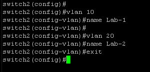
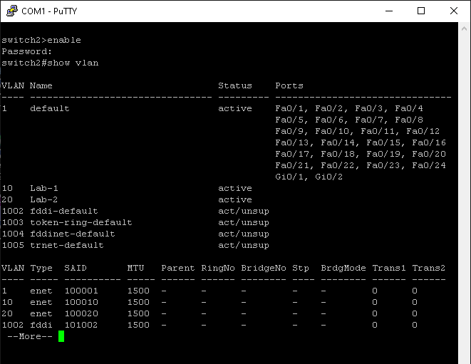
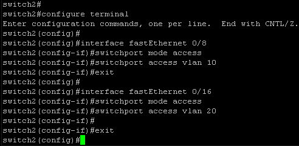
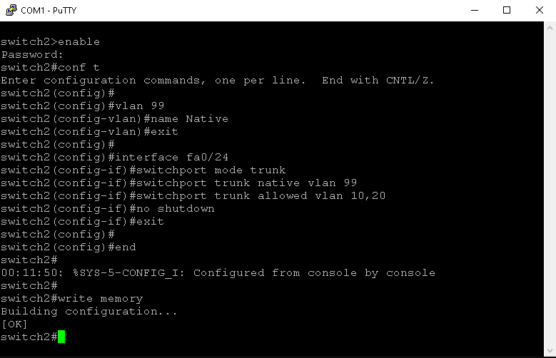
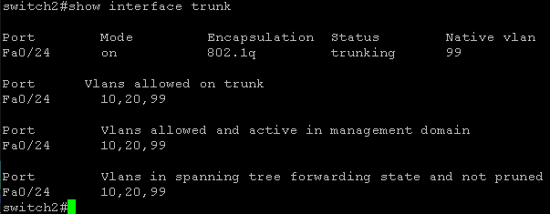
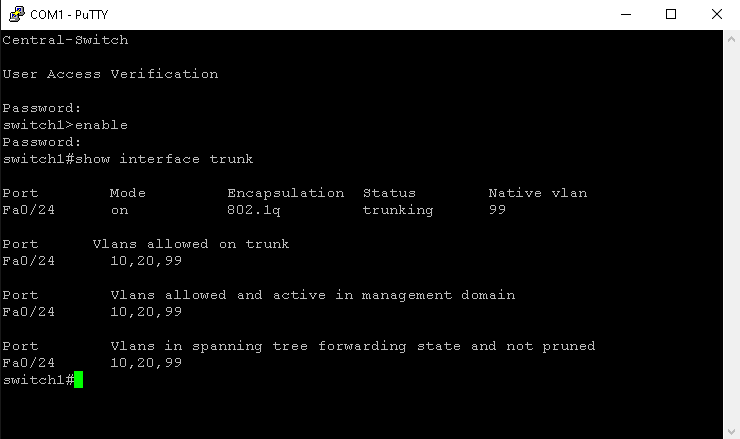
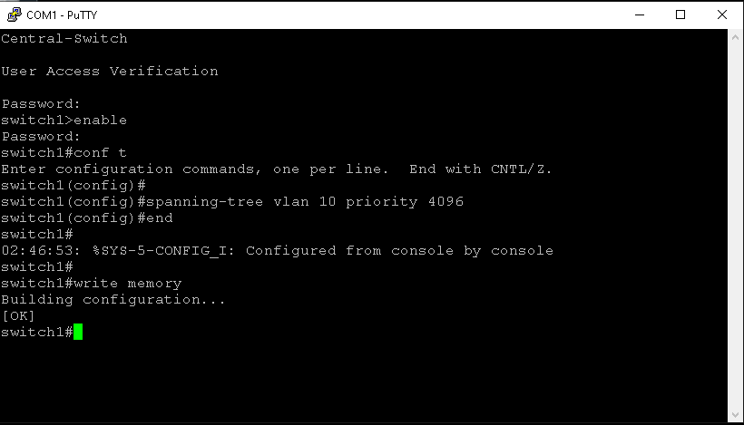
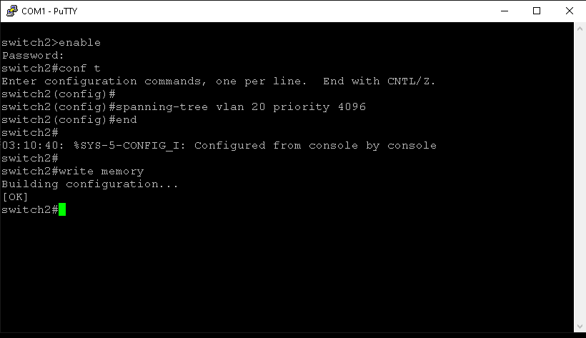
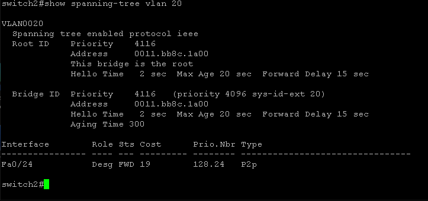
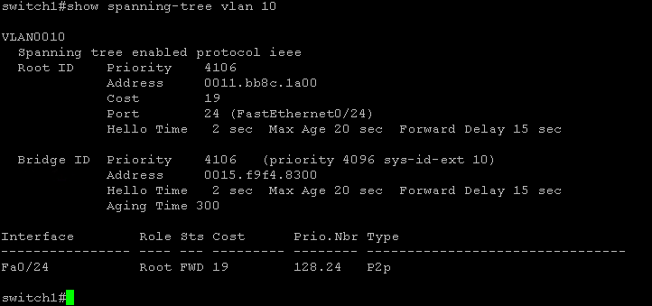

This lab is a continuation of the previous lab with the Cisco Catalyst 2950 switch in Cisco Catalyst Switch Lab 1. In that lab some basic switch configurations were demonstrated that included setting up and configuring VLANs and configuring switch port security.
In this next Cisco switch lab, I'm going to take an older Cisco Catalyst 3550 switch and set it up aside the main Cisco Catalyst 2950 and further configure Spanning Tree Protcol - STP and a VLAN Trunk Port configuration.
To start, I'm going to carry out the following steps on the Cisco Catalyst 3550 switch to enter ROMMON mode:
switch: prompt appear in your console session (PuTTY).This procedure interrupts the normal boot process and forces the switch into the boot loader environment (ROMMON):
As previously demonstrated with Cisco Catalyst Switch Lab 1, I'm going to start off this lab with running the same factory reset commands starting with a flash initialization on the Cisco Catalyst 3550.


After factory reset of the switch is complete, I'll go through the prompts in PuTTY to reconfigure the switch as previously demonstrated with the Cisco Catalyst 2950.
After I reconfigure the switch from scratch, I'm going to Press RETURN to get started in the PuTTY interface.

Configuring a management IP on VLAN 1 and setting a default gateway so the switch can be managed over the network.

Configure the console line to use logging synchronous so system messages don't interrupt commands while working on the console.

As configured on the Catalyst 2950, vlan 10 and vlan 20 under the names Lab-1 and Lab-2 will be created like so.
The vlan's can be viewed via show vlan under Privileged EXEC mode.
In this example on the second switch, port 8 is setup on vlan 10 and port 16 is setup on vlan 20.
Trunk Port:
A trunk port is a switch port that is configured to carry traffic for multiple VLANs across a single physical link. Instead of the port being tied to just one VLAN like an access port, a trunk port uses 802.1Q tagging to label each frame with its VLAN ID, so that the receiving switch knows which VLAN the traffic belongs to.
Trunk port configurations are typically used to connect switches together or to connect a switch to a router or firewall that hanldes multiple VLANs.
In this example, a trunk port configuration would make sure VLAN 10 and VLAN 20 traffic can travel between the 2950 and the 3550 switches while keeping the traffic logically separated.
Spanning Tree Protocol - STP:
STP is a layer 2 loop-prevention functionality used in Ethernet networks. When multiple switches are interconnected, redundant paths can cause broadcast storms and network failures. STP automatically detects these loops and places some switch ports into a "blocking state" while leaving others forwarding, ensuring that there is always a single active path between devices.
If the active path fails, STP recalculates and unblocks an alternate path. In this lab, STP demonstrates how one switch (the 3550) can be elected as the root bridge, controlling the logical topology of teh network.
Create VLAN 99 Native on both switches:
In this example, vlan 99 is created as the trunk native VLAN and is assinged to interface fa0/24 to configure the VLAN trunk port.
Catalyst 2950:

Catalyst 3550:
To display information about the trunk port configuration on a switch, the following command can be run in privileged EXEC mode
Catalyst 3550:
Catalhyst 2950:
Catalyst 2950:
Catalyst 3550:
To verify the configuration on both switches:
Catalyst 3550:
Catalyst 2550:
